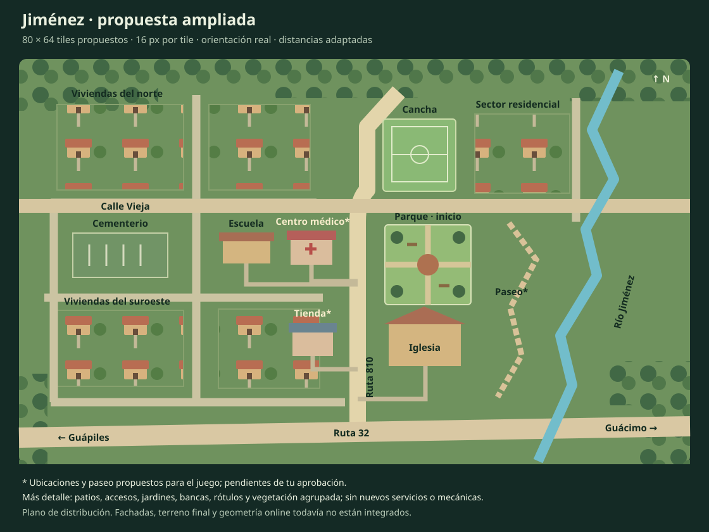

Propuesta de distribución basada en el centro real aprobado. Las manzanas se simplifican; las casas dibujadas representan agrupaciones, no parcelas reales ni una cantidad final de viviendas.
La ubicación del centro médico, la tienda y el paseo del río son propuestas para el juego. El dibujo aún no es la implementación pixel art.
Ver base geográfica · Volver al juego actual